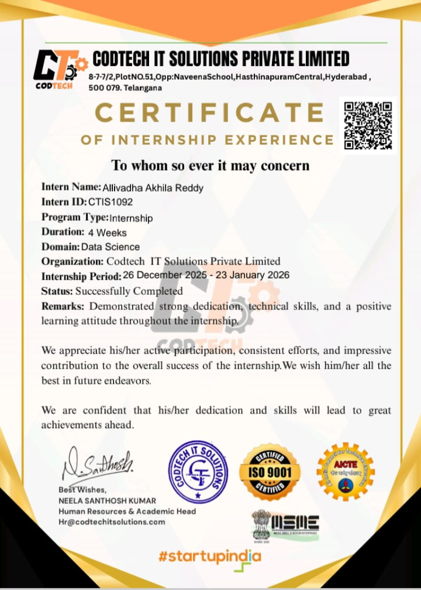
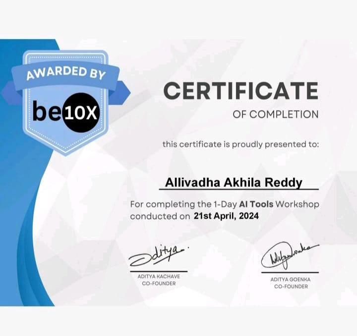
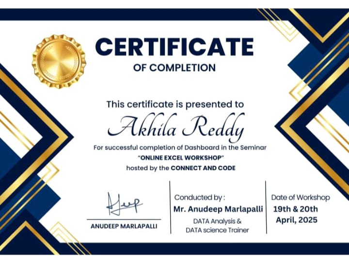
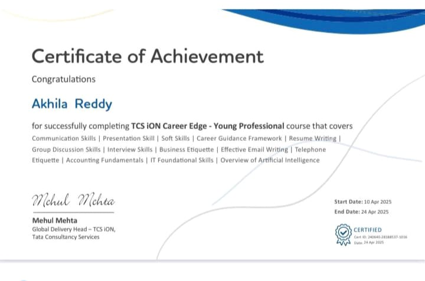
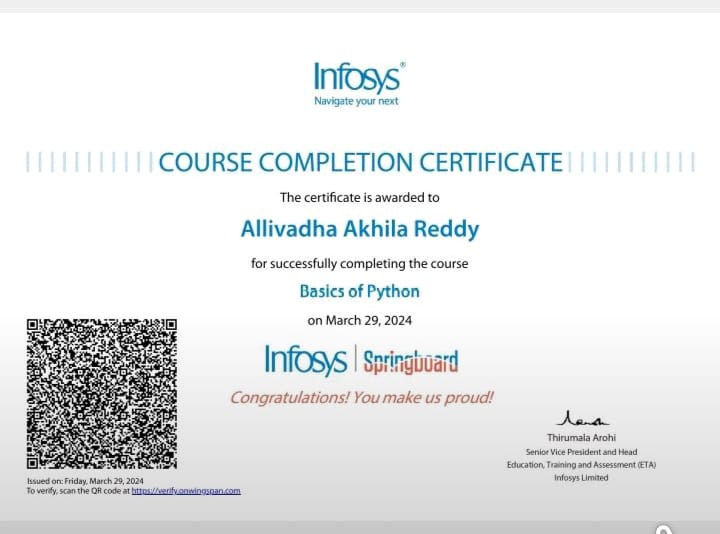

Hi, I'm Allivadha Akhila Reddy, currently pursuing my B.Tech in Computer Science Engineering. Aspiring Python Developer with a strong passion for building innovative and impactful digital solutions. My areas of interest lie in Web development and Data Science, where I strive to combine creativity with problem-solving skills to deliver efficient, user-friendly, and data-driven applications.
On the Data Science side, I am fascinated by the power of data-driven decisions. I have experience in Python, Pandas, NumPy, Matplotlib, and Machine Learning algorithms, which I use to analyze datasets, extract meaningful insights, and create predictive models. My focus is on transforming raw data into valuable information that supports intelligent decision-making.
Feel free to connect with me on LinkedIn or reach out through my contact information to discuss opportunities, share insights, or collaborate on AI and ML projects!
Malla Reddy Institute of Technology
Duration: 2022-2026 (Pursuing)
CGPA: 8.21
Narayana jr college
Duration: 2020-2022
Percentage (%): 95%
Vishwa Bharati High School
Duration: 2019-2020
GPA: 10.0

Successfully completed a Data Science Internship at CodTech IT Solutions Private Limited from 26 December 2025 to 23 January 2026. During this internship, I gained practical experience in data preprocessing, exploratory data analysis, and machine learning model development using real-world datasets. I worked with Python-based tools to analyze data, visualize trends, and generate insights to support data-driven decision-making.
This internship certification is recognized by AICTE, ISO, and MSME, reflecting industry-standard training and professional skill development.
Technologies & Tools: Python, Pandas, NumPy, Matplotlib, Scikit-learn, Jupyter Notebook
Developed a machine learning–based application to predict house prices by analyzing property features such as location, area, number of rooms, amenities, and market trends. Implemented supervised learning models (Regression algorithms) to provide accurate price predictions and assist buyers and sellers in decision-making. Built a Flask web application for real-time user interaction, enabling users to input property details and instantly receive price estimates. Processed, cleaned, and visualized real estate datasets using Pandas, NumPy, and Matplotlib to uncover pricing patterns and insights. Improved decision-making in property valuation by delivering data-driven price predictions. Technologies Used: Python, Scikit-learn, Pandas, NumPy, Matplotlib, Flask
Developed an intelligent stock prediction and market analysis system using machine learning and deep learning techniques to forecast stock price movements. Implemented time-series forecasting models including LSTM (Long Short-Term Memory) and ARIMA to analyze historical trends and predict future prices. Performed data preprocessing, feature scaling, and trend visualization to improve prediction accuracy and interpret market behavior. The system provides real-time insights into stock performance, supporting data-driven investment decisions and financial trend analysis. Technologies Used: Python, TensorFlow/Keras, Scikit-learn, Pandas, NumPy, Matplotlib, yFinance API

I’ve successfully completed the "AI Tools Workshop" offered by Be10x.
This workshop enhanced my skills in:
- Exploring the latest AI tools to improve productivity and efficiency
- Applying AI-driven solutions for automating tasks and workflows
- Gaining hands-on experience with practical use cases in different domains
Learning to leverage AI tools is essential in today’s digital world, and this certification marks another step in my journey of innovation and technology adoption.

I've successfully completed the "Generative AI & AI Agent Workshop", hosted by 10000 Coders.
This workshop enhanced my skills in:
• Understanding the fundamentals of Generative AI and AI Agents
• Exploring real-world applications of AI-driven automation
• Learning how AI agents interact, make decisions, and perform tasks
• Gaining practical insights into building intelligent AI solutions
Generative AI and AI agents are transforming modern technology, and this certification marks an important step in my professional growth in the field of Artificial Intelligence.

I've successfully completed the "Online Excel Workshop" offered by Connect and Code.
This course enhanced my skills in:
• Building interactive spreadsheets and dashboards using Excel features and formulas
• Connecting Excel with external data sources and automating data refresh workflows
• Writing clean formulas, using named ranges, and applying best practices for workbook design
Practical Excel skills increase productivity and enable better decision-making — this certification strengthens my toolkit for data work and reporting.

I have successfully completed the TCS iON Career Edge - Young Professional certification program. This comprehensive course has strengthened my expertise in communication skills, business etiquette, resume writing, interview techniques, and foundational IT and accounting skills, among other key professional competencies. I extend my sincere gratitude to TCS iON for providing this valuable learning opportunity. I look forward to applying these skills in my professional journey and continuing to enhance my career growth.

I've successfully completed the "Basics of Python" certification offered by Infosys.
This course strengthened my programming foundation and improved my problem-solving skills in Python.
Key skills gained:
• Understanding Python syntax and structure
• Working with variables, data types, and operators
• Using conditional statements and loops for decision-making
• Implementing functions and modular programming concepts
• Handling lists, tuples, dictionaries, and strings
• Writing simple programs to solve real-world problems
Python is a powerful and beginner-friendly language widely used in data science, automation, and software development. This certification marks an important step in my journey toward becoming a skilled programmer and data professional.

I've successfully completed the "Master Power Query in Excel with AI" certification.
This course enhanced my skills in:
• Importing, cleaning, and transforming data using Power Query
• Automating repetitive data preparation tasks efficiently
• Integrating AI-assisted insights for smarter data analysis
• Building dynamic dashboards and improving data workflows
Power Query combined with AI enables efficient data processing and decision-making, and this certification marks an important step in my data analytics journey.
Email: akhilareddy2212@gmail.com
LinkedIn: Allivadha Akhila Reddy
GitHub: Akhila Reddy
Mobile: 9392876529
Address: Hyderabad